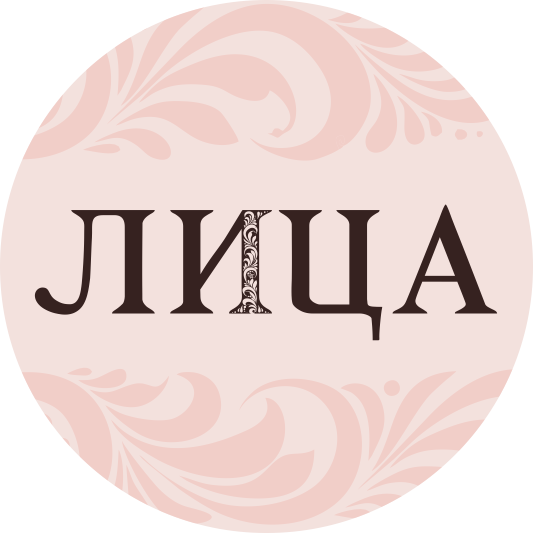
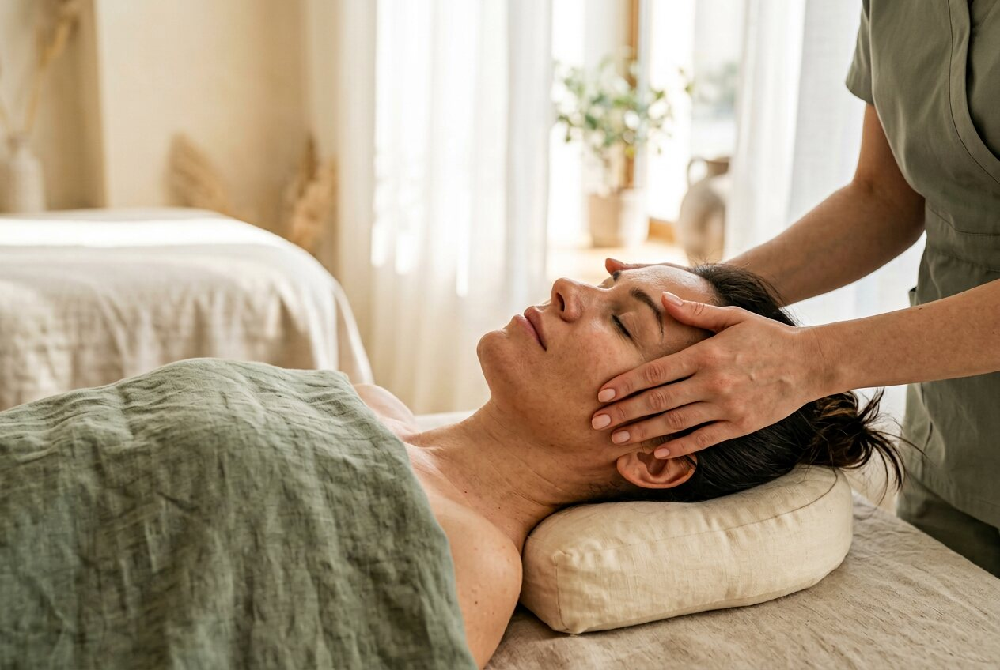
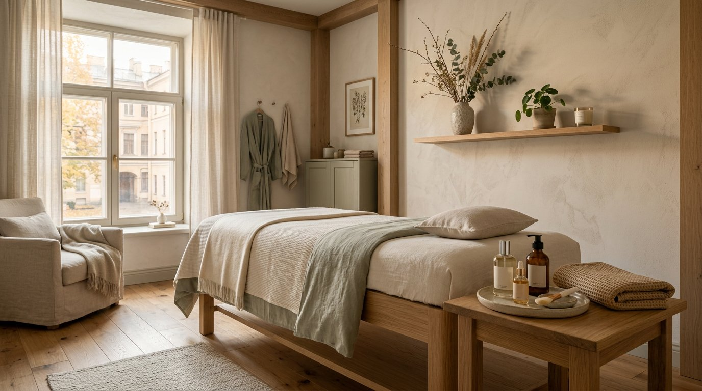

Внимание к вам
Учитываем запрос, чувствительность кожи и ваши ощущения.

МАССАЖСтудия массажа и косметологии
Ручные техники для лица и тела, косметологический уход и время, которое принадлежит только вам.

01 Ручные массажные техники
02 Индивидуальный подбор ухода
03 Две студии — выберите удобную
Мы создали пространство, где профессиональная забота о лице и теле начинается с разговора. Специалист уточнит ваши пожелания, расскажет о подходящих техниках и поможет выбрать комфортный формат.
Как проходит первый визитУчитываем запрос, чувствительность кожи и ваши ощущения.
Объясняем, что будем делать, и подстраиваем процедуру под вас.
Расскажем о длительности, стоимости и вариантах ухода заранее.
Выберите направление — мы поможем определиться с техникой и специалистом.
Ручная техника для расслабления и ухода за лицом. Специалист поможет выбрать подходящий формат.
Более интенсивная ручная техника. Перед визитом можно обсудить запрос и зону работы.
Глубокая ручная проработка лица или тела — с учётом ваших ощущений и выбранной зоны.
Отдельная процедура для тех, кто хочет уделить внимание спине и верхней части тела.
Интраоральная техника. Перед записью уточните у специалиста, подходит ли она вам.
Маски, пилинги и аппаратные методики. Состав ухода подбирается после консультации.
Указаны цены знакомства и отдельные услуги по прайсу сайта. Итоговая стоимость зависит от выбранной техники и категории специалиста — подтвердите её при записи.

Знакомство со студией — это не экзамен по массажу. Не нужно заранее знать название техники: достаточно рассказать, чего вам хочется.
Администратор поможет выбрать филиал и направление.
Специалист ответит на вопросы и согласует комфортный формат.
Стоимость и длительность известны до подтверждения записи.
Если вы уже знаете, что хотите приходить регулярно, спросите администратора о действующих курсах и депозитах.
Варианты на несколько процедур для выбранного направления.
Баланс для услуг и косметики — уточните доступные суммы и срок действия.
Номиналы 3 000, 5 000, 10 000 и 15 000 ₽ — приятный повод подарить время себе.
Перед покупкой уточните, какие услуги, сроки и правила действуют для выбранного предложения.
Читайте отзывы на Яндекс Картах и выбирайте студию, куда удобно приехать.
Отзывы на Яндекс КартахПочитайте впечатления гостей о визитах, атмосфере и работе специалистов.
Перейти к отзывамНе нашли ответ? Позвоните в выбранную студию — администратор поможет.
Расскажите администратору, что именно вы ищете. Специалист уточнит пожелания и особенности, а перед началом объяснит выбранную технику. Если есть медицинские ограничения, сообщите о них заранее.
Да. Вы можете записаться на отдельную процедуру и после неё решить, хотите ли продолжить. Условия абонементов уточняются отдельно до покупки.
Стоимость зависит от техники и категории специалиста. На странице указаны цены знакомства для отдельных процедур; администратор подтвердит точную цену и длительность до записи.
Студии есть в Санкт-Петербурге и Омске. Выберите город в верхней части сайта — контакты и адрес обновятся.
Можно просто спросить